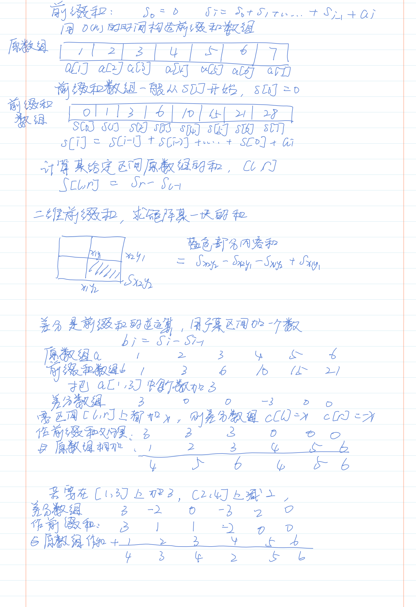
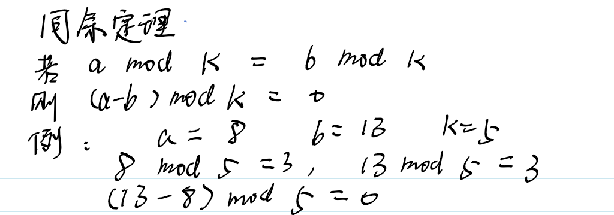

前缀和与差分

例题
523 连续的子数组
给你一个整数数组 nums 和一个整数 k ，编写一个函数来判断该数组是否含有同时满足下述条件的连续子数组：
- 子数组大小 至少为 2 ，且
- 子数组元素总和为
k的倍数。
如果存在，返回 true ；否则，返回 false 。
如果存在一个整数 n ，令整数 x 符合 x = n * k ，则称 x 是 k 的一个倍数。0 始终视为 k 的一个倍数。
解法一，暴力解,将前缀和数组算出，再算出每一个子数组的值，依题目进行模运算。O(n^2)
class Solution {
public:
bool checkSubarraySum(vector<int>& nums, int k) {
vector<int> sum(nums.size()+1);
for(int i = 1;i < sum.size();i++){
sum[i] = nums[i-1] + sum[i-1];
}
for(int left = 0;left < nums.size();left++){
for(int right = left+1;right < sum.size();right++){
int x = sum[right]-sum[left];
if(x%k == 0 && right-left>=2){
return true;
}
}
}
return false;
}
};解法二，前缀和加哈希表法。这里需要用到同余定理。

class Solution {
public:
bool checkSubarraySum(vector<int>& nums, int k) {
int sum = 0;
unordered_map<int,int> m;//余数作key，index作为value
m[0] = -1;
for(int i = 0;i < nums.size();i++){
sum = (sum + nums[i])%k;//由于余数只和个位有关系，直接取模
if(m.find(sum) != m.end()){//判断同余
if(i - m[sum] >1){
return true;
}
}
else{
m[sum] = i;//当前余数不存在，加入哈希表
}
}
return false;
}
};